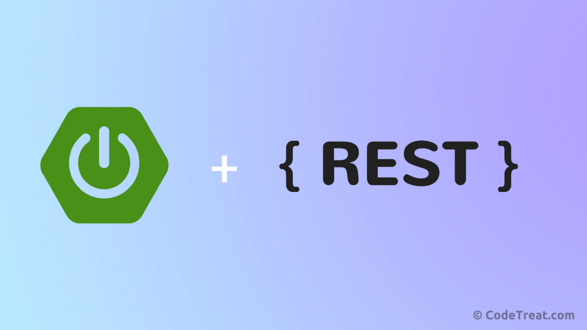

Rest API : How to Build with Spring Boot
August 24,2020 REST, stands for Representational State Transfer, which is an architectural style to develop APIs. REST API is an application program interface that exchanges JSON (or any other documents). It uses HTTP requests to GET, POST, PUT and DELETE data.
This blog post will be a guide to develop 'RESTful web service' or 'REST APIs' using Spring Boot, Hibernate, JPA and MYSQL.
We will divide this task into following steps :
- 1. Create Spring Boot Project
- 2. Configure Database
- 3. Create Model
- 4. Create JPA Repository Layer
- 5. Create Rest Controller
- 6. Run The Project
1. Create Spring Boot Project
Open SpringSTS and create a new Spring Starter Project with JPA, JDBC, Hibernate, Web and Rest Dependencies, or you can download a project from start.spring.io.
2. Configure Database
Create a database named 'restdb' in MYSQL. Then configure database properties in application.properties.
3. Create Model
4. Create JPA Repository Layer
5. Create Rest Controller
6. Run The Project
Finally, run the project as Spring Boot App. The project will run at http://localhost:8080.
More From This Blog
API : An Intoduction
Posted on: August 14, 2019
API is a regular term used widely in field of web development. But many people don't have any , or have a vague idea about APIs Read more....
Git : Get Started With
Posted on: September 18, 2019
GIT has been established as a popular and a must-know tool for developers in recent time. Basically, Git is a Read more....
Constructors in C++
Posted on: July 9, 2019
Constructors are the special type of member functions that have same name as that of the class. So, if constructors are Read more....
Mail Sender in Java
Posted on: October 16, 2019
Java provides Mailer APIs for sending and receiving emails via Java Application using any mail servers. In this blog post Read more....
Why Constructors in C++
Posted on: July 14, 2019
Have you ever wondered, why constructors are so important in object oriented languages ? Do you, actually know when Read more....
Java Best Practices
Posted on: July 7, 2019
Programming is not just about writing code. It is about writing Clean, Maintainable, Non-Fragile Code and Read more....